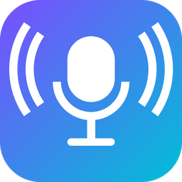

Изменение голоса
мужской, женский и голос призрака
Этот браузер не поддерживает обработку звука. Откройте страницу в свежем Chrome, Edge, Safari или Firefox.
Запишите фразу — потом её можно прослушать любым голосом, скачать или отправить.
Наденьте наушники — иначе динамик попадёт в микрофон и будет свист.
На компьютере голос можно отправить в Zoom, Discord и другие программы: установите
VB-CABLE (vb-cable.com), в «Устройствах» ниже выберите «CABLE Input», а в программе для звонков —
микрофон «CABLE Output».
На телефоне в звонки голос не передаётся — для сообщений используйте «Запись».
Микрофон
Изменённый голос
Тонкая настройка
Высота тона
Тембр
Шёпот
Громкость, дБ
Устройства
Микрофон
Куда отправлять голос
Названия устройств появятся после первого доступа к микрофону.